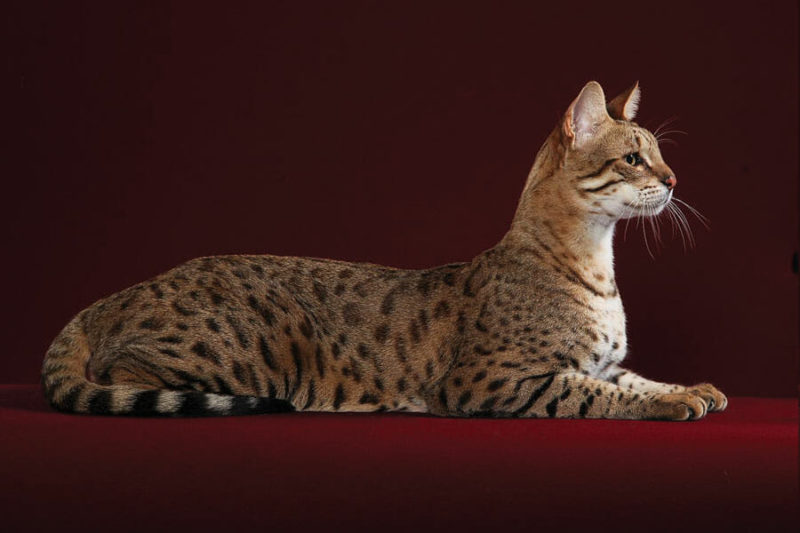
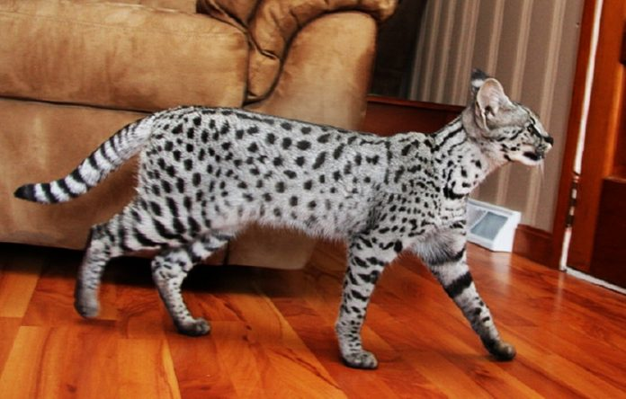
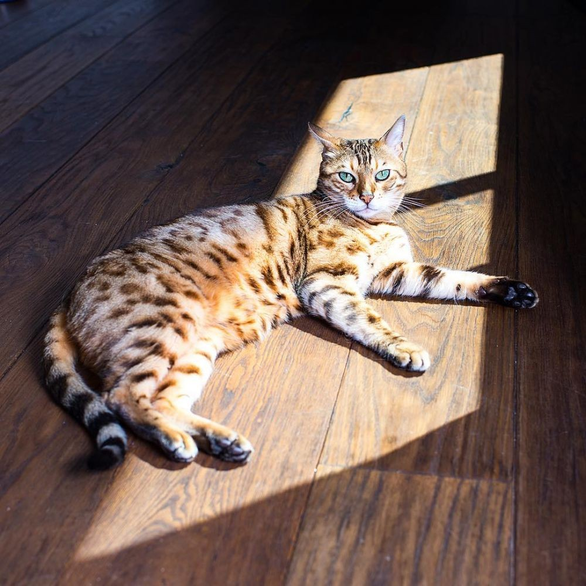

Kucing merupakan hewan karnivora predator yang berukuran kecil
dengan nama latin Felis silvestris catus. Sejak 6.000 tahun SM,
kucing telah berbaur dengan kehidupan manusia. Dahulu, orang Mesir
Kuno menggunakan kucing untuk menjauhkan hewan pengerat seperti
tikus dari lumbung penyimpan hasil panen. Kini, memelihara kucing
telah menjadi hobi baru di kalangan masyarakat.
Kucing sendiri memiliki banyak sekali jenis. Dan di antaranya ada
yang merupakan hasil persilangan sehingga membuatnya menjadi ras
kucing langka di dunia. Kucing-kucing jenis ini yang biasanya
memiliki harga fantastis. Meski begitu, masih banyak pecinta kucing
yang ingin memiliki hewan menggemaskan ini.
Nah, berikut ini adalah 3 jenis kucing termahal yang perlu kamu
ketahui. Yuk disimak!
JENIS KUCING MAHAL
Ashera

Kucing Ashera
Ashera merupakan kucing hibrida atau hasil genetika yang sengaja
dibuat oleh manusia. Kucing dengan bulu yang indah ini adalah
percampuran kucing macam tutul dari Asia, kucing savana, kucing
Afrika, dan beberapa kucing domestik yang menjadi unggulan.
Alhasil, bulu ashera mirip seperti macan tutul dengan DNA kucing
savana.
Harga kucing Ashera sendiri mencapai 20 ribu hingga 100 ribu USD
atau sekitar Rp280 juta hingga Rp1,4 miliar.
Savannah

Kucing Savannah
Kucing sabana adalah salah satu ras kucing hibrida yang merupakan
hasil persilangan dari kucing liar serval dari Afrika dengan
kucing domestik ras siam, bengal, dan mau mesir. Sabana telah
dinobatkan oleh Guinness World Records sebagai ras kucing
terpanjang di dunia, dengan panjang 17,1 inci atau sekitar 44 cm.
Sabana adalah kucing terpopuler di Amerika Serikat.
Harga kucing Savannah mencapai 15 ribu hingga 35 ribu USD atau
sekitar Rp210 juta hingga Rp490 juta.
Bengal

Kucing Bengal
Kucing bengal atau Blacan adalah keturunan ketiga dari hasil
persilangan selang kucing american shorthair dengan kucing asian
leopard Kucing ini berasal dari California, Amerika Serikat.
Walaupun tergolong kucing hutan, namun ras bengal termasuk
binatang yang banyak digemari dan menjadi binatang peliharaan.
Kucing ini memiliki ukuran badan yang panjang dengan otot-otot
pada tubuhnya yang kuat. Dia memiliki tulang yang mulia dan tebal,
serta bulu yang tebal, rapat dan halus.
Harga kucing Bengal sendiri bisa mencapai 1000 hingga 25 ribu USD
atau sekitar Rp14 juta hingga Rp350 juta.
Perawatan kucing
Memelihara kucing mahal ini tidak mudah karena ada syarat yang harus
kita lakukan. Misalnya, kita harus memiliki sertifikat resmi dari
penangkaran kucing. selain itu kita harus bisa memenuhi kebutuhan
hidup si kucing. kucing tidak bisa dikurung di dalam kandang yang
kecil. sebaliknya, kita harus menyediakan sebuah ruangan yang cukup
luas untuk kandangnya. Ruangan itu juga sebaiknya dilengkapi dengan
kolam kecil, rumput, gua buatan, dan pohon untuk mereka olahraga
melompat. Biasanya, kucing peliharaan diberi makan makanan kering
buatan pabrik. Namun, kucing savannah hanya boleh diberi makan
daging ayam yang masih segar.
Banyak yang menginginkan kucing serval menjadi hewan peliharaan.
Namun, sebelum Moms dan keluarga memutuskan memeliharanya, sebaiknya
ketahui terlebih dahulu bagaimana cara yang baik dalam merawat
kucing serval sebagai binatang peliharaan.
Memiliki sertifikat resmi dari penangkaran kucing
Membuat kandang luar yang besar dan aman
Menyediakan lingkungan yang hangat sepanjang tahun
Menyediakan sarana penunjang seperti kolam kecil, rumput, gua
buatan, dan pohon kecil untuk mereka bisa melompat
Memberikan perawatan khusus dari dokter hewan eksotik
berpengalaman